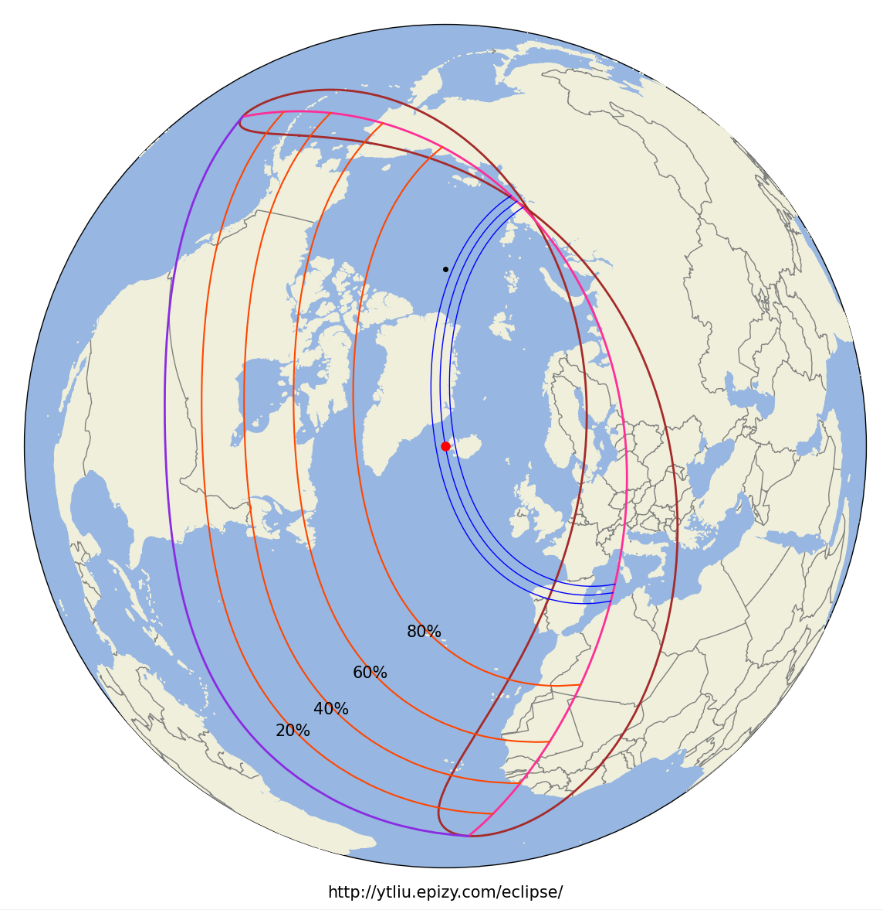
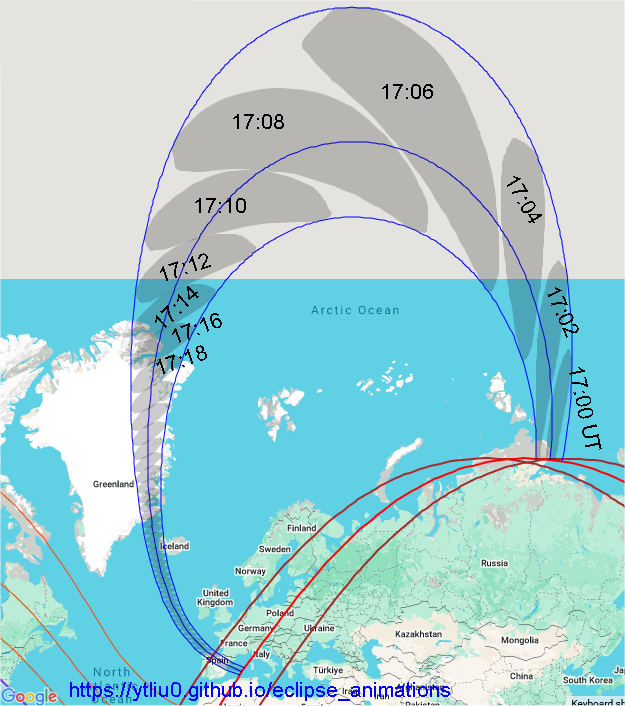
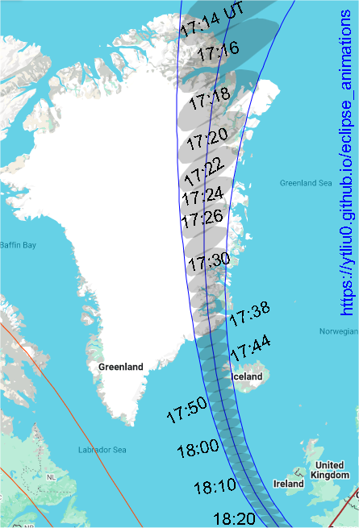

The total solar eclipse on August 12, 2026 will be visible along a path of totality that will pass over the Arctic, Greenland, Iceland, North Atlantic Ocean, northern Spain and a tiny region of northeastern Portugal. Partial eclipses are visible in northern Russia, Alaska, Canada, northern United States, Greenland, most of Europe and West Africa.
Total solar eclipse is visible at locations at which Moon's umbra (Moon's dark shadow) passes through. Moon's umbra appears on Earth at 16:58 UT in northeastern Russia. It moves in the northwest direction, reaching about 100km from the north pole around 17:06 UT before turning southward and reaching Greenland six minutes later. At 17:27 UT, the central line reaches the westernmost longitude in eastern Greeland and then turns southeastward. The umbra passes over western Iceland between 17:44 and 17:50 UT. It continues to move southeastward in the North Atlantic Ocean and passes through many regions in Spain between 18:27 and 18:33 UT. The umbra leaves the Earth at 18:34 UT in the Mediterranean Sea close to the north coast of Algeria.
Contents

In this orthographic map, the red dot at the center is the location of the greatest eclipse, where Moon's shadow axis is closest to the geocenter. The black dot is the north pole. The purple line is the limit of Moon's penumbra. The three blue lines across the map center are the northern limit of umbra (right line), central line (middle line), and southern limit of umbra (left line). Note that the north and south here refers to the direction in the fundamental coordinate system, which in this eclipse is opposite to the geographic north and south direction in the beginning of the umbra path. Total solar eclipse is visible inside the narrow strip bounded by the northern and southern limits of umbra. The brown line is the locus of points where eclipse begins/ends at Sunrise (upper-left part) or Sunset (lower-right part). The middle red line is the locus of points where the maximum eclipse occurs at Sunrise (upper-left part) or Sunset (lower-right part). No eclipse is visible beyond the region bounded by the brown and purple lines. The orange red lines with the same shape as the penumbra limits are lines of equal eclipse magnitude, and the magnitude is indicated (20%, 40%, 60%, 80%) around each line.
In this animation, the green region is Moon's penumbra. The dark region inside the umbra limits is Moon's umbra. The dark region outside the penumbra is Earth's night side.
My Eight Millennia of Eclipses website has an orthographic map with animation. You can also click on the map to show a prediction of the eclipse circumstances at a location.
In the following maps, the limits of umbra and central line are shown together with Moon's umbra at different times. Lunar limb corrections are included and are calculated based on the data from the Lunar Reconnaissance Orbiter.

Background map source: Google Maps (Map Data ©2025).
The gray regions are Moon's umbras at different times. The time difference between two successive gray regions is two minutes.
Note that Google Maps use a projection that highly distorts the polar region and the areas in that region are highly exaggerated.
Greenland, Iceland and North Atlantic Ocean

Background map source: Google Maps (Map Data ©2025).
Iceland (click the figure to enlarge)
Background map source: Google Maps (Map Data ©2025).
Spain (click the figure to enlarge)
Background map source: Google Maps (Map Data ©2025).
My Eight Millennia of Eclipses website provides an interactive map that allows you to zoom in/out and pan the map. You can also click on the map and get a prediction of the eclipse circumstances. However, lunar limb corrections are not included in the map and the path limits may be off by 1-3 kilometers. The prediction of contact times will also be off by a few seconds.
Background map source: Google Maps (Map Data ©2025)
In this animation, the dark region inside the umbra limits is Moon's umbra. The dark region outside the umbra at the end of the animation is Earth's night side.
The information provided above focuses on the path of Moon's shadow. It's useful if you want to know where and when to see the eclipse. Suppose you have chosen a location to view the eclipse. The next thing you want to know is what you will see at the location. This is called the local circumstances.
The local circumstances of this solar eclipse in major cities around the world can be found on this page on my Eight Millennia of Eclipses website. You can click on the links to see a more detailed information of the eclipse in each city listed there. Note that daylight saving time is not taken into account in the city time zone. Lunar limb corrections are also not included in the calulations and the contact times may be off by a few seconds. If you don't find the location you want on that page, go to this interactive map, zoom in to your location and click on it to obtain the eclipse circumstances. Alternatively, you can use the form below to enter your location.
Fill in the longitude and latitude (in decimals) of a location below, click the submit button and it will open my Eight Millennia of Eclipse page on a new browser tab. The page contains the local circumstances of the eclipse and an animation of the eclipse that will be observed at the location.
Longitude: °
Latitude: °
Time Zone: (Enter the UTC offset)